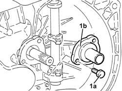
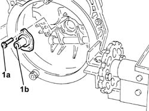

2110C20 seals for gear input shaft - replace with gearbox removed
- Path
- Procedures > 21 GEARBOX > 2110 MANUAL GEARBOX AND DIFFERENTIAL > 2110C gear cases and covers of manual gearbox with differential > 2110C20 seals for gear input shaft - replace with gearbox removed
- Kind
- repair procedure (removal / refitting; the operation number is the code)
- Applies to
- engines: 2.5 V6, 3.2 V6, 1.9 JTD 8v , 1.9 JTD 16v, 2.4 JTD 10v; all production periods
- Interactive page
- https://sloeber94.github.io/elrnDB-a156/en/#/3237961
Applies to: engines: 1.9 JTD 16v; all production periods
 Dismantling
Dismantling
 Reassembling
Reassembling1. Undo the bolts (1a) and remove the cover incorporating the gasket for the gearbox input shaft (1b).

Applies to: engines: 1.9 JTD 16v; all production periods
Reassembling
DismantlingPlace the cover incorporating the gasket for the gearbox input shaft back in its housing and secure it using the bolts.
Applies to: engines: 3.2 V6, 1.9 JTD 8v , 2.4 JTD 10v; production: da 02/00 a 01/01
Dismantling
Reassembling1. Undo the bolts (1a) and remove the main shaft cover (1b) complete with gasket.

Applies to: engines: 3.2 V6, 1.9 JTD 8v , 2.4 JTD 10v; production: da 02/00 a 01/01
Reassembling
DismantlingFit a new main shaft cover, complete with gasket, and fix it using the bolts.
Applies to: engines: 2.5 V6; production: da 03/99 a 01/00
Dismantling
Reassembling1. Undo the bolts (1a) and remove the main shaft cover (1b) complete with gasket.
Applies to: engines: 2.5 V6; production: da 03/99 a 01/00
Reassembling
DismantlingFit a new main shaft cover, complete with gasket, and fix it using the bolts.